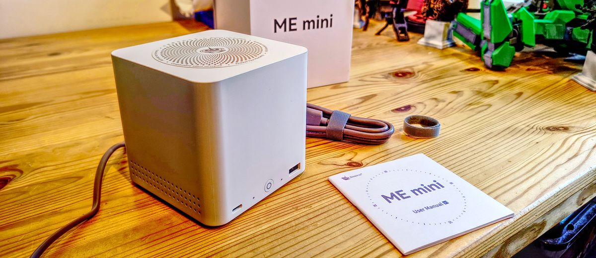

SAMPLE A · HERO

Beelink ME mini
Intel N150 · 99mm cube · 12GB LPDDR5
Idle
~7 W
M.2 slots
6× NVMe
SATA bays
0
NIC
2× 2.5GbE
ECC
No
IPMI
No
Idle wattage7 W
If you want all-flash, lowest power, no spinning rust — this is it.